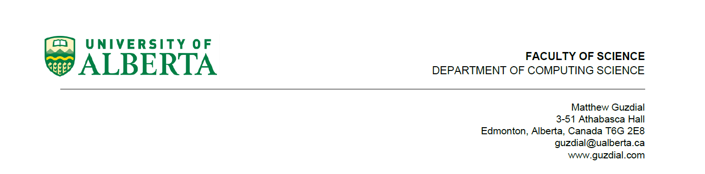

INFORMATION LETTER and CONSENT FORM
Title of the study: Explainability
| Principal Investigator(s): |
Dr. Matthew Guzdial
Assistant Professor
Department of Computing Science
University of Alberta
Edmonton, AB
guzdial@ualberta.ca
|
|
Co-investigator(s):
|
Faraz Khadivpour
Research Assistant
Department of Computing Science
University of Alberta
Edmonton, AB
khadivpo@ualberta.ca
|
Invitation to Participate: We invite you to participate in this study about eXplainable Artificial Intelligence (XAI).
Purpose of the Study: The purpose of this study is to compare XAI methods. XAI refers to techniques that aim to make AI systems results more understandable to humans. Our first hypothesis is that our method will help humans learn a more accurate mental model of the behavior of the AI systems. Our second hypothesis is that humans will find our method more helpful than other methods. Thus, human evaluation is crucial for testing these hypotheses.
Participation: First, you will be provided with:
1- Five different images.
2- An AI system's prediction on these images.
3- Explanations for the AI system's prediction on these images.
Then you will be asked to choose the best explanation.
After that, you will be provided with:
1- Five other different images.
2- Explanations for the AI system's prediction on these images.
Then you will be asked: A) to guess the AI system's prediction and B) to choose the best explanation.
Finally, you will be asked to take a 10-question survey. The study should take approximately 10 minutes to complete. You do not have to answer any questions that you do not want to answer, and you may stop by simply closing the window, no data will be collected. You may take your time with the study, but we expect most participants to take 7-8 minutes to guess the predictions and 2-3 minutes for the questions.
Benefits: You will receive 3.75 CAD for participating in the study (0.25 CAD per minute). You can earn 1.25 CAD more if you can answer five questions correctly (0.25 for each correct answer). Maximum of 5 CAD.
Risks: There are no risks to taking part in this study.
Confidentiality and Anonymity:All results from the study will remain confidential. We will only use results from the study for the purposes of this research. The only people who will have access to the research data are Dr. Matthew Guzdial and Faraz Khadivpour. Results will be published in pooled (aggregate) format. We will make a portion of this data available at publication time, but anonymity is guaranteed since you are not being asked to provide your name or any identifiable information.
Data Storage: The results will come from the surveys and logs based on how you answered the questions. We will keep these results on password-protected computers. These computers will only be in the department of Computing Science at the University of Alberta.
Voluntary Participation: You are under no obligation to take part and if you choose to, you may refuse to answer questions that you do not want to answer. Should you choose to withdraw midway through the electronic survey simply close the link and no responses will be included. Given the anonymous nature of the survey, once you have submitted your responses it will no longer be possible to withdraw them from the study.
Information about the Study Results: We will publish study results in a conference paper. This paper will be made publicly available through the websites of the investigators.
Contact Information:If you have any questions or need any more information about the study itself, please contact us. You may contact the researchers at the emails mentioned above.
The plan for this study has been reviewed by a Research Ethics Board at the University of Alberta, ethics ID number (Pro00110990). If you have any questions regarding your rights as a research participant or how the research is being conducted, you may contact the Research Ethics Office at 780-492-2615.
Completion of the questionnaire and submission of the survey means you consent to participate in this study.